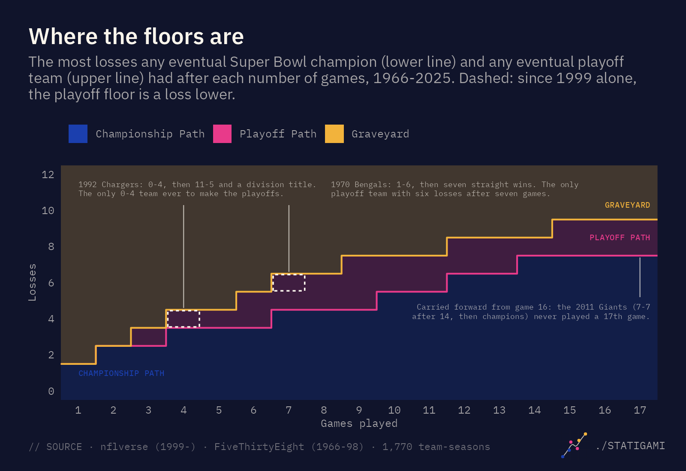
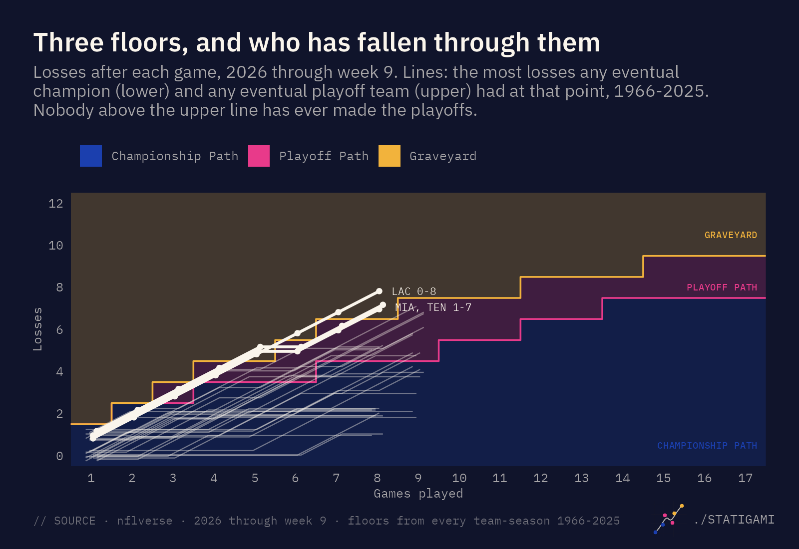

Every week of the NFL season there’s a conversation about who’s going to win it all. This is the other conversation: who’s already out?
[PLACEHOLDER: a sentence or two on why you started this. The project began with the “60% of Super Bowl winners started 2-0” claim. What made you flip it from a who-wins question into a who’s-out question?]
Not “mathematically eliminated,” which doesn’t happen until December. I mean something earlier and stranger: the point where a team has more losses than any team that went on to make the playoffs has ever had at the same stage. Not more than most of them. More than every single one, going back to the first Super Bowl season in 1966.
I call that the Graveyard. Through week 9 of 2026, three teams are in it.
Short answer: the Chargers (0-8), the Dolphins (1-7) and the Titans (1-7). All three have more losses after eight games than any of the 659 playoff teams since 1966 had at that point. In 60 seasons, 611 teams have fallen through that floor and none of them made the playoffs. The weird part is that the floor rises as the season goes on, so teams climb back out all the time: Miami and Tennessee already did it once this year. It has never once mattered.
Three floors
The whole thing runs on two numbers for each point in the season, and both come straight from history.
The first is the champion floor: the most losses any eventual Super Bowl champion had after that many games. After eight games it’s four, because the 2001 Patriots were 4-4 on their way to a title and nobody has won from worse. The second is the playoff floor: the most losses any eventual playoff team had after that many games. After eight games it’s six, set by the 1970 Bengals, the 2020 Washington Football Team and the 2022 Jaguars, who were all 2-6 and all played in January.
Those two lines split every team into three tiers:
- Championship Path. No more losses than the worst start by a champion. A team here has a start that has produced a Super Bowl winner.
- Playoff Path. More losses than any champion had, but no more than some playoff team had. Nobody has won a title from here, but teams have made the playoffs.
- Graveyard. More losses than any playoff team has ever had at this point. Making the playoffs from here would be a first.

A few things about those lines that matter for everything below:
- They’re records, not odds. One team sets each boundary. The 1992 Chargers started 0-4 and finished 11-5 as division champions, so 0-4 is not the Graveyard. They are the only one of 170 teams to start 0-4 and make the playoffs. One team, one boundary.
- They’re frozen. The floors come from the 60 completed seasons, 1966 through 2025. Nothing a 2026 team does can move them until the season is over.
- They never go down. The playoff floor is 8 losses after 14 games and 9 after 15, because a team with games left has room to recover. Where the raw history dips (the champion floor at game 17, which only five seasons have reached), the line is carried forward so a team can’t fall a tier by winning.
- Only losses count. A tie is not a loss. The Giants and Commanders tied in week 5 and it changed nobody’s tier.
Most of the champion floor through game 11 is one team: the 2001 Patriots, who were 1-3, 3-4 and 5-5 and still won the Super Bowl. [PLACEHOLDER: optional, a line about that Patriots team or the Giants of 2007 and 2011, if you have a memory of one of those seasons.]
Where 2026 stands

Through week 9: 16 teams on the Championship Path, 13 on the Playoff Path, 3 in the Graveyard.
The first two weeks don’t separate anyone. Three champions started 0-2 (the 1993 Cowboys, the 2001 Patriots and the 2007 Giants), so after two games all 32 teams are on the Championship Path by definition. The first split comes in week 3, when five 0-3 teams (Houston, Tampa Bay, the Chargers, Miami and Tennessee) dropped to the Playoff Path. Houston and Tampa Bay won their next game and are still on it.
The other three kept losing. At 0-5 in week 5, the Chargers, Dolphins and Titans all entered the Graveyard on the same day: 116 teams since 1966 have started 0-5, and the best any of them finished was 8-8.
Then it got strange.
In and out of the Graveyard

The playoff floor isn’t a smooth line. It’s a staircase, and it steps up at games 6, 7, 9, 12 and 15. So a team in the Graveyard that wins into one of those steps comes back out without having done anything special. The team didn’t climb; the ground rose.
That’s what happened to Tennessee in week 6 and Miami in week 7. Each won its sixth game to reach 1-5, and at six games the playoff floor is five losses (the 1970 Bengals, 2015 Chiefs, 2018 Colts and 2020 Washington were all 1-5 and made it). Back to the Playoff Path. Then each lost its next two, reached 1-7, and re-entered: Tennessee in week 8, Miami in week 9.
I want to be careful about what leaving the Graveyard means, because it looks like a comeback and it isn’t one. Of the 611 team-seasons that have entered the Graveyard, 186 left it at least once, for 226 exits in all. Twenty-seven teams went in three separate times. None of the 611 made the playoffs. Not the ones that stayed in, and not the ones that got out.
The best anyone has done from the exact spot Miami and Tennessee are in is the 2021 Dolphins: 1-7, then seven straight wins, 9-8, and a seat on the couch in January. They climbed out of the Graveyard in week 9, spent most of the rest of the year on the Playoff Path, and it still ended the way all 110 seasons that started 1-7 have ended.
[PLACEHOLDER: anything you remember about that 2021 Dolphins run, or about the 2017 Chargers (0-4 to 9-7, missed on a tiebreaker) if you want an AFC West note here. Or cut this.]
What a first would take
Nobody has ever made the playoffs from the Graveyard. Here is how far each of the three is from the first time.
The Chargers, 0-8. Two losses past the playoff floor of six after eight games. Forty-three teams have started 0-8, and the best any of them finished was 6-10 (the 1978 Cardinals and the 2017 49ers). The floor reaches eight losses at game 12, so the earliest the Chargers can even leave the Graveyard is by winning their next four to get to 4-8. Making the playoffs from here would take something like 9-8 or 10-7 from 0-8, which has never come close to happening.
The Dolphins and Titans, 1-7. One loss past the floor. The floor steps to seven at game 9, so either team gets back to the Playoff Path with a win this week. The record they’d have, 2-7, is exactly where the 2020 Washington Football Team sat before winning the NFC East at 7-9. That is the single playoff team among 181 that have had seven losses after nine games. It’s also the whole reason 2-7 isn’t the Graveyard.
So the week 10 schedule has a few games that are about the Graveyard specifically:
- Miami at Indianapolis (Sunday, Nov. 15). The Colts are 2-7, right at the playoff floor. A Miami win sends the Dolphins back to the Playoff Path for the second time. A Colts loss, at 2-8 after ten games, puts Indianapolis in the Graveyard. One of those two things has to happen.
- Jacksonville at Tennessee (Sunday, Nov. 15). A Titans win does the same for them.
- Buffalo at the Jets (Sunday, Nov. 15). The Jets are also 2-7. A loss puts them in.
- Chargers at Baltimore (Monday, Nov. 16). Nothing can get the Chargers out this week. A loss makes it 0-9, three past the floor.
Philadelphia, the third 2-7 team, has a bye. Their next loss does it.
[PLACEHOLDER: your take on the Chargers at 0-8, or on any of these teams. Was this the season you expected from them?]
The Graveyard fills slowly, and then all at once

Three teams in the Graveyard after nine weeks sounds like not much, and it is: the Graveyard count has bounced between 1 and 3 since week 5, partly because the floor steps let teams out as fast as losses put them in. That’s normal. Across the 60 seasons, about 9% of teams are in the Graveyard after eight games. By game 14 it’s 31%. In a typical recent season 11 to 13 of the 32 teams end up in it at some point.
What I’d watch instead is the Playoff Path, which went from 10 teams to 13 in week 9 (Baltimore, Las Vegas and Carolina all dropped in). Those are the teams with a start no champion has survived. The four 5-4 teams still on the Championship Path (Seattle, the Rams, New England and Cleveland) are sitting exactly on the champion floor: 5-4 is the worst start any champion has had after nine games, and only two did it, the 2000 Ravens and the 2001 Patriots. One more loss and they join the Playoff Path too.
A tier is a floor, not a forecast. 132 teams since 1966 stayed on the Championship Path all season and still missed the playoffs, and 93 playoff teams spent at least a week on the Playoff Path. The tiers only say what has and hasn’t happened before, which is exactly what they’re for.
Does the baseline matter?
Everything above uses all 60 seasons of the Super Bowl era. I also ran it on the modern era alone, 1999 on, because the league has changed: 14-game seasons, four-team divisions, a quarter of the league making the playoffs instead of 44%. If the old seasons were distorting the floors, that’s where it would show.
They mostly aren’t. The champion floor is identical in both eras at every game count. The playoff floor differs in exactly two places, each because of one old team:
- After 4 games: the 1992 Chargers at 0-4. Since 1999 no 0-4 team has made the playoffs, so on the modern floor 0-4 is the Graveyard. That’s why Houston, Tampa Bay, the Chargers, Miami and Tennessee were all briefly in it in week 4 on the modern baseline and not on the full one.
- After 7 games: the 1970 Bengals at 1-6. Modern floor says Graveyard; full floor says Playoff Path. Tennessee in week 7 and Miami in week 8 landed there.
That’s 7 of 288 team-weeks this season where the two disagree, and from game 8 on the floors are the same in both eras, so there will be no more disagreements the rest of the way. The two modern-only cases are also the closest anyone has come to a Graveyard playoff team: the 2004 Bills and 2017 Chargers both started 0-4, both finished 9-7, and both missed the playoffs by one game. On the modern floor they were Graveyard teams. On the full floor they never were, because of a Chargers team from 1992. I went with the full baseline because a thing that has happened once is still a thing that has happened.
[PLACEHOLDER: do you agree with that call, or would you rather lead with the modern floor? One sentence in your words.]
What to watch
The thing I’ll be following isn’t the top of the standings. It’s whether any of this year’s Graveyard teams becomes the first to make it out and into the playoffs, and the honest answer from 60 seasons of data is that they won’t. But the Dolphins and Titans will probably spend a few more weeks bouncing between tiers, the Jets, Colts and Eagles are a loss away from joining them, and the floor keeps rising.
I’ll update the tiers every Tuesday. [PLACEHOLDER: where the weekly update will live (Instagram, TikTok, this page?), and a closing line.]
Data and methods
Data. Game results for 1999 on come from the nflverse games file, used under CC BY 4.0. Results for 1966–1998 come from FiveThirtyEight’s NFL Elo game file (MIT license), reshaped to match. The two files agree on every one of the 5,852 games they share (1999–2020), and the older seasons were checked against a second independent source. Regular season only, 1966–2025: 60 seasons, 1,770 team-seasons, 659 playoff teams, 60 champions. The 2026 tiers use the current nflverse file, re-downloaded every week.
Floors. For each number of games played (1 to 17), the champion floor is the most regular-season losses any eventual Super Bowl champion had at that point, and the playoff floor is the most any team that played a playoff game had. Both are carried forward so they never decrease with games played (this changes only the champion floor at game 17, where the 2011 Giants, 7-7 after 14, never played a 17th game). Ties are not losses. Both floors are frozen at the end of the 2025 season.
Tiers. A team is on the Championship Path if its losses are at or below the champion floor for its games played, on the Playoff Path if they are above that but at or below the playoff floor, and in the Graveyard if they are above the playoff floor. Tiers are indexed by games played, so a team on a bye keeps its tier. A team leaves the Graveyard only when the playoff floor steps up at its next game (games 6, 7, 9, 12 and 15); it can’t be lifted out by anything a rival does.
Two baselines. Every tier is computed on the full Super Bowl era (1966 on, the primary) and on the modern era (1999 on). They differ only at games 4 and 7.
What a playoff team is. Any team that played a playoff game, including all 16 in the 1982 strike-season tournament and the 1968 Chiefs, who lost a division tiebreaker. Strike seasons (1982, 9 games; 1987, 15 games) are kept as played. The 1966–69 AFL is included because both leagues sent a champion to the Super Bowl.
Limitations. The floors are set by single teams, so they are records, not probabilities: a tier says whether something has happened before, not how likely it is. Older seasons were shorter and sent a smaller share of teams to the playoffs, which makes their boundaries rarer rather than wrong. Seventeen-game seasons have only been played five times, so the game-17 floors rest on 158 team-seasons.
Code and data: nfl-championship-trajectories on GitHub, including the weekly update script that rebuilds the tiers and these figures.